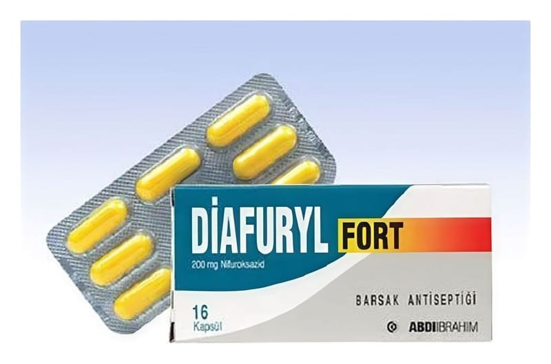

Diafuryl Fort 200 mg Kapsül, 16 Adet

Ne için kullanılır
KT · Bölüm 1DİAFURYL FORT, nifuroksazid etkin maddesini içerir. 1 kapsül içinde 200 mg etkin madde bulunur. 16 veya 24 kapsül içeren blister ambalajda kullanıma sunulmuştur. Piyasada ayrıca süspansiyon formu da bulunmaktadır.
DİAFURYL FORT bölgesel (lokal) etkili bir bağırsak antiseptiğidir. Genel durum bozukluğu, ateş, enfeksiyon veya zehirlenme belirtilerinin görülmediği bakteriyel kökenli olduğu düşünülen akut ishal tedavisinde, su kaybının giderilmesine ek olarak kullanılır.
Su kaybının derecesi ve uygulama yolu (ağızdan veya damardan), ishalin şiddetine ve yaşınıza ile durumunuza (eşlik eden hastalıklar vs.) bağlı olarak değişir.